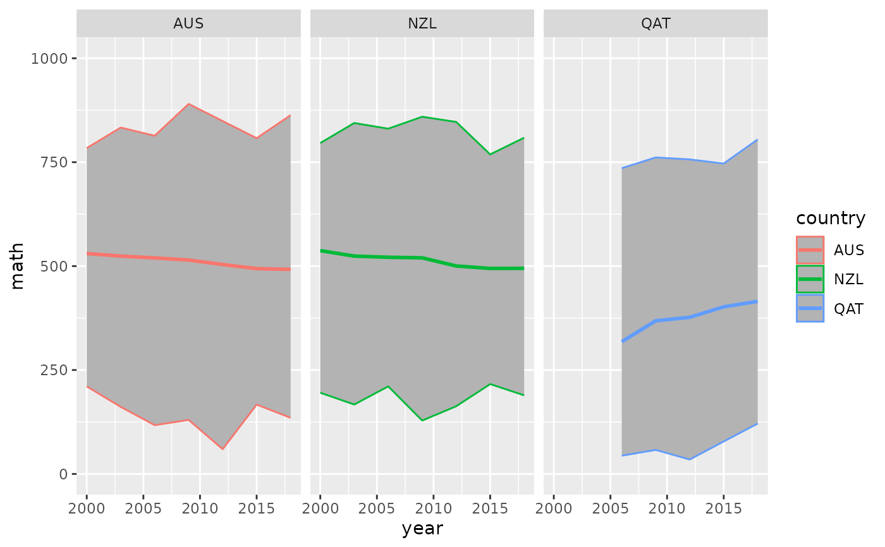

A subset of PISA data, containing scores and other information from the triennial testing of 15 year olds around the globe. Original data available from https://www.oecd.org/pisa/data/. Data derived from https://github.com/kevinwang09/learningtower.
Format
A tibble of the following variables
year the year of measurement
country the three letter country code. This data contains Australia, New Zealand, and Indonesia. The full data from learningtower contains 99 countries.
school_id The unique school identification number
student_id The student identification number
gender recorded gender - 1 female or 2 male or missing
math Simulated score in mathematics
read Simulated score in reading
science Simulated score in science
stu_wgt The final survey weight score for the student score
Understanding a bit more about the PISA data, the school_id and
student_id are not unique across time. This means the longitudinal element
is the country within a given year.
We can cast pisa as a tsibble, but we need to aggregate the data to each
year and country. In doing so, it is important that we provide some summary
statistics of each of the scores - we want to include the mean, and minimum
and maximum of the math, reading, and science scores, so that we do not lose
the information of the individuals.
The example code below does this, first grouping by year and country, then
calculating the weighted mean for math, reading, and science. This can be
done using the student weight variable stu_wgt, to get the survey weighted
mean. The minimum and maximum are then calculated.
Examples
pisa
#> # A tibble: 433 × 11
#> country year math_mean math_min math_max read_mean read_min read_max
#> <fct> <int> <dbl> <dbl> <dbl> <dbl> <dbl> <dbl>
#> 1 ALB 2000 395. 27.4 722. 354. 59.7 640.
#> 2 ALB 2009 377. 79.6 706. 385. 17.0 662.
#> 3 ALB 2012 395. 62.4 688. 394. 0.0834 742.
#> 4 ALB 2015 412. 122. 711. 405. 93.6 825.
#> 5 ALB 2018 437. 96.5 789. 405. 152. 693.
#> 6 ARE 2009 421. 57.8 768. 431. 48.1 772.
#> 7 ARE 2012 434. 138. 862. 442. 75.5 785.
#> 8 ARE 2015 427. 91.8 793. 432. 54.4 827.
#> 9 ARE 2018 437. 87.6 865. 431. 84.0 814.
#> 10 ARG 2000 385. 16.0 675. 417. 84.2 761.
#> # ℹ 423 more rows
#> # ℹ 3 more variables: science_mean <dbl>, science_min <dbl>, science_max <dbl>
library(dplyr)
# Let's identify
#1. The **key**, the individual, who would have repeated measurements.
#2. The **index**, the time component.
#3. The **regularity** of the time interval (index).
# Here it looks like the key is the student_id, which is nested within
# school_id #' and country,
# And the index is year, so we would write the following
as_tsibble(pisa,
key = country,
index = year)
#> # A tsibble: 433 x 11 [3Y]
#> # Key: country [100]
#> country year math_mean math_min math_max read_mean read_min read_max
#> <fct> <int> <dbl> <dbl> <dbl> <dbl> <dbl> <dbl>
#> 1 ALB 2000 395. 27.4 722. 354. 59.7 640.
#> 2 ALB 2009 377. 79.6 706. 385. 17.0 662.
#> 3 ALB 2012 395. 62.4 688. 394. 0.0834 742.
#> 4 ALB 2015 412. 122. 711. 405. 93.6 825.
#> 5 ALB 2018 437. 96.5 789. 405. 152. 693.
#> 6 ARE 2009 421. 57.8 768. 431. 48.1 772.
#> 7 ARE 2012 434. 138. 862. 442. 75.5 785.
#> 8 ARE 2015 427. 91.8 793. 432. 54.4 827.
#> 9 ARE 2018 437. 87.6 865. 431. 84.0 814.
#> 10 ARG 2000 385. 16.0 675. 417. 84.2 761.
#> # ℹ 423 more rows
#> # ℹ 3 more variables: science_mean <dbl>, science_min <dbl>, science_max <dbl>
# We can assess the regularity of the year like so:
index_regular(pisa, year)
#> [1] TRUE
index_summary(pisa, year)
#> Min. 1st Qu. Median Mean 3rd Qu. Max.
#> 2000 2004 2009 2009 2014 2018
# We can now convert this into a `tsibble`:
pisa_ts <- as_tsibble(pisa,
key = country,
index = year,
regular = TRUE)
pisa_ts
#> # A tsibble: 433 x 11 [3Y]
#> # Key: country [100]
#> country year math_mean math_min math_max read_mean read_min read_max
#> <fct> <int> <dbl> <dbl> <dbl> <dbl> <dbl> <dbl>
#> 1 ALB 2000 395. 27.4 722. 354. 59.7 640.
#> 2 ALB 2009 377. 79.6 706. 385. 17.0 662.
#> 3 ALB 2012 395. 62.4 688. 394. 0.0834 742.
#> 4 ALB 2015 412. 122. 711. 405. 93.6 825.
#> 5 ALB 2018 437. 96.5 789. 405. 152. 693.
#> 6 ARE 2009 421. 57.8 768. 431. 48.1 772.
#> 7 ARE 2012 434. 138. 862. 442. 75.5 785.
#> 8 ARE 2015 427. 91.8 793. 432. 54.4 827.
#> 9 ARE 2018 437. 87.6 865. 431. 84.0 814.
#> 10 ARG 2000 385. 16.0 675. 417. 84.2 761.
#> # ℹ 423 more rows
#> # ℹ 3 more variables: science_mean <dbl>, science_min <dbl>, science_max <dbl>
pisa_ts_au_nz <- pisa_ts %>% filter(country %in% c("AUS", "NZL", "QAT"))
library(ggplot2)
ggplot(pisa_ts_au_nz,
aes(x = year,
y = math_mean,
group = country,
colour = country)) +
geom_ribbon(aes(ymin = math_min,
ymax = math_max),
fill = "grey70") +
geom_line(size = 1) +
lims(y = c(0, 1000)) +
labs(y = "math") +
facet_wrap(~country)
#> Warning: Using `size` aesthetic for lines was deprecated in ggplot2 3.4.0.
#> ℹ Please use `linewidth` instead.
